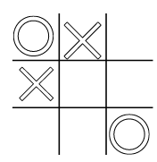

A propos
Le projet prend cours durant l’années de préapprentissage 2023-2024.Ce projet est un morpion géant.
Dans ce projet tous les métiers sont mis au travail les ébénistes crée le boitier, les automaticiens s’occupe de code certaine chose + de crée des supports en aluminium, les électroniciens s’occupent de crée les leds qui permettront de jouer + de s’occuper de toute la partie électronique, et finalement les informaticiens qui s’occuperont de l’interface graphique sur téléphone et du jeu en lui-même, par exemple en configurant les Raspberry et en faisant le code nécessaire .
Le serveur :
On a créé deux vm avec comme os debian 12.4 pour simuler le Raspberry pi et changer l’ip de chaque vm puis on a installé mqtt-clients sur les deux vm. On a fait les settings de mqtt pour les connecter entre eux
Config Raspberry :
On a installé l’OS (operating system) debian 12 sur le Raspberry. On a aussi dû configurer le routeur ou on a attribué une adresse IP (internet protocole) au Raspberry. On a installé les différents outils qui vont permettre la création du serveur (NodeJS, MQTT, socket IO) NodeJS permet de créer des serveurs web. Mqtt (Mosquitto) est un protocole de messagerie de machine a machine.
Gameplay :
Pour le gameplay nous avons fait la liste des taches et les règles du morpion que nous avons transmis au groupe design. Nous nous sommes renseignés sur comment faire un tableau en HTML et comment pouvoir afficher une image quand nous appuyons sur une case du tableau. Nous nous sommes séparé les taches afin d’aller plus rapidement, et nous avons commencé les boutons et la page de jeu.
Design :
On a commencé par réfléchir comment le site allait ressemblez. Nous avons discuté à propos de Web-Site et on a fait le design sur Canva. Après avoir discuté et mis en place comment nous allons le faire, on a demandé l’avis à nos encadrants. Quand on a fini avec Canva, nous avons commencé coder le site. Nous avons créé 5 pages “A propos”, “PlayerVSPlayer”, “PlayerVSOrdi”, “Règle” et “Home”. On a commencé à apprendre le Responsive Design.
